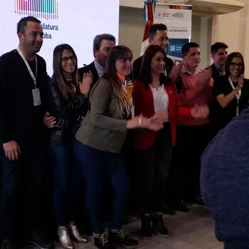

Dia del niños
La municipalidad en coordinación con distitas organizaciones llevaron a cabo el festejo del dia de la niñez para que niños de distintas edades disfruten de una tarde de juegos y entretenimientos Queriamos agradecer a los locales comerciales que ayudaron donando juguetes para hacer sorteos y golosinas para que cada niño se vaya con una dulce sorpresita!!!


Programa de Fortalecimiento de Concejos Deliberantes
